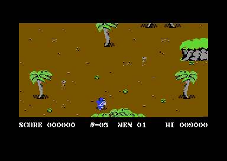

<meta charset="utf-8">
<meta name="viewport" content="width=device-width, initial-scale=1">
<title>Commando — How it works</title>
<link rel="preconnect" href="https://fonts.googleapis.com">
<link rel="stylesheet" href="https://fonts.googleapis.com/css2?family=Lato:wght@400;700;900&family=IBM+Plex+Mono:wght@400;500&display=swap">
<style>
:root{--bg:#23262d;--paper:#e9e7e1;--surface:#fff;--line:#d5d3cc;--ink:#2f3136;--soft:#55585f;--mute:#80838a;--blue:#1f5fa8;--mono:'IBM Plex Mono',monospace;--sans:'Lato',system-ui,sans-serif}
*{box-sizing:border-box}html{background:var(--bg);min-height:100%}body{background:var(--paper);color:var(--ink);font:17px/1.6 var(--sans);max-width:1080px;margin:0 auto;min-height:100vh;padding-bottom:4rem}.hero,.wrap{padding-left:clamp(22px,7vw,68px);padding-right:clamp(22px,7vw,68px)}.hero{padding-top:48px}.eyebrow,.fig{font:12px var(--mono);letter-spacing:.08em;text-transform:uppercase;color:var(--mute)}h1,h2{line-height:1.2;letter-spacing:-.02em}h1{font-size:clamp(34px,5vw,46px);margin:8px 0}h2{font-size:26px;margin:0 0 12px}.sub,.lede{color:var(--soft)}section{padding:42px 0 24px}.plate{background:var(--surface);border:1px solid var(--line);border-radius:10px;padding:clamp(18px,4vw,28px);box-shadow:0 4px 14px #0000000c}.cmd-controls{display:flex;gap:10px;flex-wrap:wrap;margin:18px 0}.cmd-controls button{background:var(--blue);border:0;border-radius:5px;color:white;padding:10px 15px;font:700 15px var(--sans);cursor:pointer}.cmd-controls button:focus-visible{outline:3px solid #e69a18;outline-offset:3px}.cmd-track{display:grid;grid-template-columns:repeat(6,minmax(90px,1fr));gap:8px;margin:24px 0 16px}.cmd-node{border:1px solid var(--line);background:#f5f4f0;border-radius:6px;padding:12px 8px;text-align:center;font:12px/1.5 var(--mono);overflow-wrap:anywhere}.cmd-node[aria-current=true]{background:#e5eef8;border:2px solid var(--blue);padding:11px 7px}.cmd-node small{display:block;color:var(--mute)}.cmd-raster{height:16px;background:linear-gradient(to bottom,#40318d 0 69%,#d5d3cc 69% 70%,#686868 70%);border-radius:8px;position:relative;margin:28px 2px 12px}.cmd-raster:after{content:'';position:absolute;top:-8px;bottom:-8px;left:var(--position,0%);width:3px;background:#d04a3a;transition:left .25s}.cmd-labels{display:flex;justify-content:space-between;font:12px var(--mono);color:var(--mute)}.cmd-state{min-height:68px;border-left:4px solid var(--blue);padding:8px 14px;background:#f5f4f0}.cmd-state p{margin:0}.cmd-note{font-size:14px;color:var(--soft);margin-top:18px}code{font: .85em var(--mono);background:#2f3136;color:#fff;border-radius:4px;padding:2px 6px;white-space:nowrap}footer{margin:20px 0 0;padding:22px clamp(22px,7vw,68px) 0;border-top:1px solid var(--line);font:12px var(--mono);color:var(--mute)}footer a{color:var(--blue)}.cmd-shot{display:block;width:min(100%,384px);height:auto;image-rendering:pixelated;border:1px solid var(--line);margin:22px auto 0}.cmd-caption{font-size:13px;color:var(--mute);text-align:center;margin:8px 0 0}@media(max-width:700px){.cmd-track{grid-template-columns:repeat(3,minmax(90px,1fr))}}
</style>
<!-- tabs -->
<header class="hero"><p class="eyebrow">Commodore 64 · 1985 · Elite Systems</p><h1>Commando</h1><p class="sub">A raster interrupt relay lets Commando redraw sprite bands in sequence, then switch character graphics for the lower HUD.</p></header>
<main class="wrap">
<section>
<p class="fig">01 · One frame, five handlers</p>
<h2>The interrupt pointer hands off the screen</h2>
<p class="lede">Instead of asking one interrupt routine to update every sprite at once, the game stores the next routine's address in low RAM and advances through a chain synchronized to the PAL raster.</p>
<div class="plate">
<div class="cmd-raster" id="cmd-raster" role="img" aria-label="PAL raster timeline; the lower band begins at line 216"><span></span></div><div class="cmd-labels"><span>top · line 30</span><span>HUD charset switch · line 216</span><span>bottom · line 222</span></div>
<div class="cmd-track" id="cmd-track" aria-label="Raster handler sequence">
<div class="cmd-node" aria-current="true"><code>$416A</code><small>frame start</small></div><div class="cmd-node"><code>$41A7</code><small>top sprites</small></div><div class="cmd-node"><code>$4266</code><small>sprites 7–4</small></div><div class="cmd-node"><code>$436B</code><small>sprites 3–0</small></div><div class="cmd-node"><code>$4119</code><small>frame end</small></div><div class="cmd-node"><code>$416A</code><small>next frame</small></div>
</div>
<div class="cmd-controls"><button id="cmd-prev" type="button">Previous handler</button><button id="cmd-next" type="button">Next handler</button><button id="cmd-play" type="button" aria-pressed="false">Play frame</button></div>
<div class="cmd-state" aria-live="polite"><p id="cmd-detail"><code>$416A</code> begins the frame, updates sound, and schedules the next raster interrupt at line <code>$1E</code>. The dispatch address is held at <code>$0406-$0407</code>.</p></div>
<p class="cmd-note">At line 216, <code>$D018</code> changes from <code>$81</code> to <code>$85</code>, selecting the second character set for the lower screen. The diagram shows the measured handler order; exact cycle offsets between handlers are still being mapped.</p>
</div>
</section>
<section>
<p class="fig">02 · Evidence</p><h2>What the frame trace confirms</h2>
<p>The RAM IRQ vector at <code>$0314-$0315</code> enters a trampoline at <code>$4116</code>, which jumps through the pointer at <code>$0406-$0407</code>. The observed chain is <code>$416A</code> → <code>$41A7</code> → <code>$4266</code> → <code>$436B</code> → <code>$4119</code> → <code>$416A</code>. The last handler clears sprite pointers, increments the frame counter at <code>$040B</code>, and schedules the next frame at raster <code>$DE</code>.</p>
<p>The reconstructed 384 × 272 frame matched all 104,448 pixels from the emulator capture. The sprite bands and character-set switch are traced in the captured gameplay state; the game loop and the code that positions the player remain under analysis.</p><p class="cmd-caption">Gameplay capture from the contributor-supplied D64 running in VICE PAL C64SC.</p>
</section>
</main>
<footer><a href="/kit.html">Kit changelog</a> · <a href="https://github.com/gamesexplained/gamesexplained">GitHub</a> · © Games Explained contributors</footer>
<script>
const steps=[
 {a:'$416A',text:'begins the frame, updates sound, and schedules the next raster interrupt at line $1E.'},
 {a:'$41A7',text:'updates the first sprite band, then places the next handler address in $0406-$0407.'},
 {a:'$4266',text:'updates sprites 7 through 4 and schedules the following raster handler.'},
 {a:'$436B',text:'updates sprites 3 through 0 and schedules raster line $D5.'},
 {a:'$4119',text:'clears sprite pointers, increments frame counter $040B, and schedules raster line $DE.'},
 {a:'$416A',text:'starts the next frame; the chain repeats.'}
];let i=0,timer=null;
function show(){document.querySelectorAll('.cmd-node').forEach((n,j)=>n.setAttribute('aria-current',String(j===i)));document.getElementById('cmd-detail').innerHTML='<code>'+steps[i].a+'</code> '+steps[i].text.replace(/\$(1E|D5|DE|0406-0407|040B)/g,'<code>$$$1</code>');document.getElementById('cmd-raster').style.setProperty('--position',(i/(steps.length-1)*100)+'%')}
function move(d){i=(i+d+steps.length)%steps.length;show()}
document.getElementById('cmd-next').onclick=()=>move(1);document.getElementById('cmd-prev').onclick=()=>move(-1);document.getElementById('cmd-play').onclick=e=>{if(timer){clearInterval(timer);timer=null;e.currentTarget.textContent='Play frame';e.currentTarget.setAttribute('aria-pressed','false')}else{e.currentTarget.textContent='Pause frame';e.currentTarget.setAttribute('aria-pressed','true');timer=setInterval(()=>move(1),1100)}};
</script>
